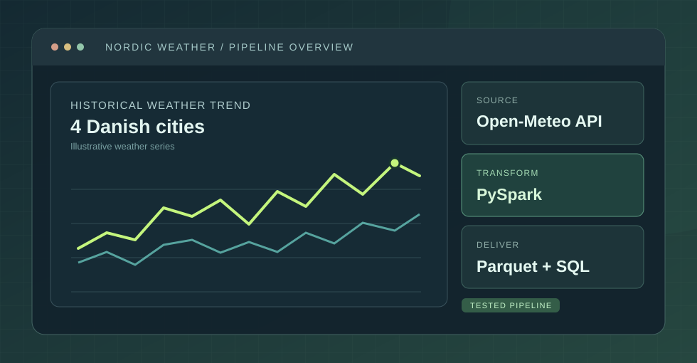

Nordic Weather
Risk Pipeline.
Building a repeatable path from an external weather API to validated daily records, monthly summaries, and SQL-backed reporting.

Turning an API response into data worth using.
Historical weather APIs give you useful observations, but the response still needs checks before you use it in reports. Dates can be missing; fields may be absent; records may be duplicated; measurements may be implausible. This project explores how to preserve raw inputs while building more reliable downstream datasets.
A small, layered pipeline.
Daily weather data comes from the Open-Meteo historical ERA5 endpoint. API responses are saved before transformations, then processed with PySpark into typed and validated records. Monthly rollups are stored as Parquet, and cleaned daily records are loaded into SQL for the dashboard.
The dashboard reads the resulting SQL dataset, keeping ingestion and presentation as separate concerns.
Where the reliability comes from.
- Save raw source responsesKeep API payload snapshots by run, so transformed records can be traced back to a specific input.
- Validate before using dataCheck missing fields and dates, duplicate city/date combinations, and invalid weather measurements.
- Make reruns safeUse SQL upserts keyed on city and record date to update existing rows instead of creating duplicates.
- Separate concernsUse Silver for daily validated records and Gold for monthly city-level aggregates. Keep reporting separate from ingestion.
Testing and a reproducible example.
The repository documents tests for API validation, transformation logic, quality checks, SQL upserts, and an offline Spark-to-SQLite workflow. GitHub Actions is configured to run the test suite on pushes and pull requests.
A documented backfill on 2 November 2026 loaded 360 daily records for four Danish cities over 90 days. These are historical model-based weather observations, not a forecast or independently observed disruption outcomes.
What this does — and what it doesn't.
Next things worth exploring: scheduled incremental ingestion, freshness alerts, more robust observability, and deployment to a managed platform when infrastructure is available.